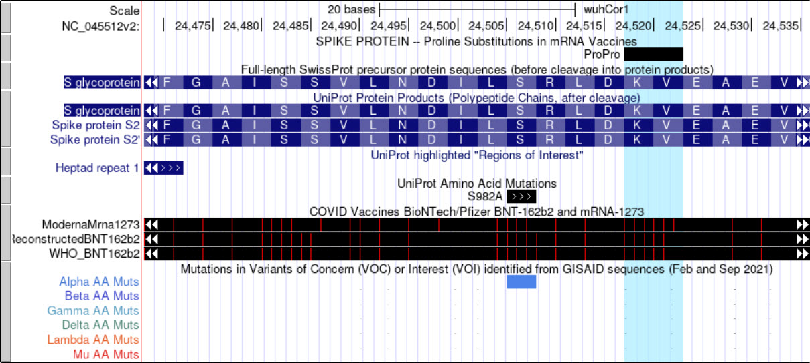

AHSG Ancillary 2021 Annual Meeting (virtual)
Monday, Oct 18, 2021.
11 am - noon Pacific
(2 pm Eastern, 8 pm CEST)
Get to know the Browser staff !
Live Q & A
We know that the Genome Browser is a lot of things to a lot of people. It is full-featured, which
also means it is complicated.
This event is an opportunity to ask questions in real time and meet
the staff.
Bring questions.
zoom link
What are we doing?
- Our staff will be available to talk to you about the Browser.
- You are encouraged to have your cameras on — we want to see you, too!
- We will have breakout rooms where you can self-assign:
beginner/experienced, research/clinical, other
- You are free to move about among rooms.
